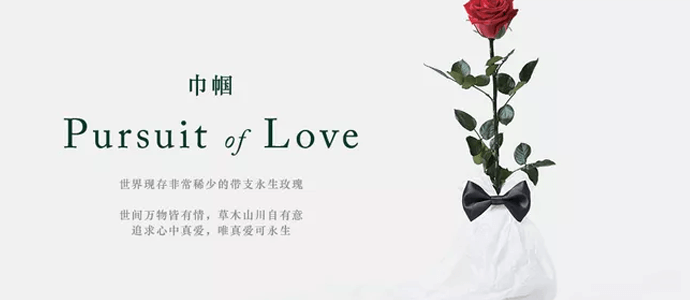

Best wishes for a customized shopping mall

You should have feelings for online stores.
Just being interested is not enough. It's like cultivating children.
Cultivate your store the same way.
Interest is just curiosity, maybe curiosity leads you to lose interest.
Opening a store in that place is definitely a bad thing to do, let alone make money.
Only if you put all your feelings into it will you reap the rewards.
The opening of the store is not to make money but to learn how to do online trade.
Learn a way to live on the Internet,Of course, experience and RMB will be your reward.
Just being interested is not enough. It's like cultivating children.
Cultivate your store the same way.
Interest is just curiosity, maybe curiosity leads you to lose interest.
Opening a store in that place is definitely a bad thing to do, let alone make money.
Only if you put all your feelings into it will you reap the rewards.
The opening of the store is not to make money but to learn how to do online trade.
Learn a way to live on the Internet,Of course, experience and RMB will be your reward.
2017.03.21